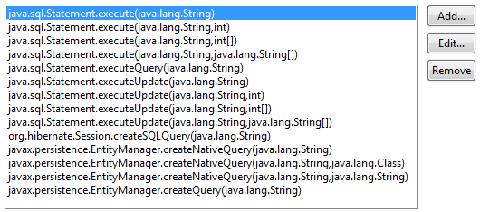

Audit - Rules - HibernateDescriptionThis group contains audit rules that check for problems related to the use of Hibernate, an object/relational persistence and query service. |
| Rules: |
Summary
SQL queries might be receiving data from the user or other unsafe sources.
Description
SQL Injection occurs when the user is able to enter data directly into SQL queries.
To detect violations, this audit rule searches the code for SQL queries such as java.sql.Statement.execute(..) and traces where the query data could have come from. In cases where the source of the query is user input, such as data from a servlet request, javax.servlet.ServletRequest.getParameter(java.lang.String), or from a SWT Text widget, org.eclipse.swt.widgets.Text.getText(), a violation is created.
These two sets of methods, the locations where tainted user data can come from and the methods used to query the database, are editable by the user.If methods are missing that are in a common package (such as java.lang.*), please let CodePro support know.
Also note, the SQL query methods for Hibernate and Persistence frameworks have been added.
Security Implications
Successful SQL Injection attacks can potentially drop tables, update the database in a malicious manner and even gain administrator access.
Example
The invocation of the method executeQuery(..) would be flagged as a violation since it uses the first name information passed from a servlet request:
ServletRequest servletRequest;
Connection connection;
Statement statement;
servletRequest = ...;
connection = DriverManager.getConnection("www.example.com", "myUserName", "myPassword");
statement = connection.createStatement();
String firstName = req.getParameter("firstName");
String query = "SELECT * FROM user_data WHERE firstName = '" + firstName + "'";
statement.executeQuery(query);
